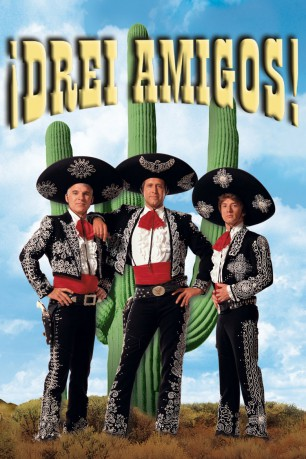

#4913 Drei Amigos!
Alternativ: ¡Three Amigos!
 
 IMDB-Wertung: 6.4 / 10
IMDB-Wertung: 6.4 / 10  Metascore: 0
Metascore: 0 
Hollywood 1916. Die drei Stummfilmstars Lucky, Dusty und Ned wurden soeben wegen überhöhter Gagenforderung gefeuert. Doch sie haben Glück im Unglück: Ein Brief aus Mexiko verspricht ihnen die stolze Gage von 100.000 Dollar. Allerdings haben die drei aufgrund ihrer geringen Spanisch-Kenntnisse den wahren Inhalt des Schreibens nicht so richtig mitgekriegt. Sie sollen in Mexiko nämlich nicht ihre drittklassigen Westernshows abziehen, sondern ein Dorf von einer Bande gefährlicher Desperados befreien. Carmen, die Absenderin des Briefes, glaubt nämlich, daß die drei wirklich so gut mit Revolver und Lasso umgehen können wie in ihren Filmen…
Jahr: 1986
Dauer: 103 Minuten
FSK: 12
Land: USA Studio: Orion PicturesTonspuren: DD2.0 - ,
Untertitel: Deutsch,
Auflösung: 1080p (1920x1040) Größe: 6707 MB
Genre: Komödie, Western
Regisseur:  John Landis
John Landis
Drehbuch: Douglas Adams
Soundtrack:
Darsteller:
 Steve Martin als Lucky Day
Steve Martin als Lucky Day Chevy Chase als Dusty Bottoms
Chevy Chase als Dusty Bottoms Martin Short als Ned Nederlander
Martin Short als Ned Nederlander Alfonso Arau als El Guapo
Alfonso Arau als El Guapo Tony Plana als Jefe
Tony Plana als Jefe- Patrice Martinez als Carmen
 Jon Lovitz als Morty
Jon Lovitz als Morty Joe Mantegna als Harry Flugleman
Joe Mantegna als Harry Flugleman Gene Hartline als Silent Movie Bandito
Gene Hartline als Silent Movie Bandito Phil Hartman als Sam
Phil Hartman als Sam- Tino Insana als Studio Guard
 Norbert Weisser als German's Friend
Norbert Weisser als German's Friend Brian Thompson als German's Other Friend
Brian Thompson als German's Other Friend- Hector Elias als Pedro
- Dyana Ortelli als Juanita
- Loyda Ramos als Conchita
- Randy Newman als Singing Bush
- Rebecca Ferratti als Señorita Kissing Ned
 Brinke Stevens als Actress in Silent Movie , uncredited
Brinke Stevens als Actress in Silent Movie , uncredited- Jorge Cervera Jr. als Bandito #1
- Kai Wulff als German
- Abel Franco als Papa Sanchez
- Fred Asparagus als Bartender
- Philip Gordon als Rodrigo
- Michael Wren als Cowboy
- William B. Kaplan als Silent Movie Bandito
- Sophia Lamour als Silent Movie Senorita
- Santos Morales als Telegrapher
- Craig Berenson als Telegram Delivery Boy
- Joshua Gallegos als Bar Patron
- Hector Morales als Carlos
- Betty Carvalho als Mama Sanchez
- Benita Telles als Rosita
- Humberto Ortiz als Pablo
- Candy Castillo als Bandito #2
- Jeff O'Haco als Bandito #3
- Carl La Fong als Tortoise
- Cosmo Mata als Man in Bar , uncredited
Datei: X:\HD-Western-1980-1999\Drei Amigos! (1986, FSK12, 1920x1040).mkv seit 30.11.2016
Festplatte: HD Eastern+Western
 Es gibt insgesamt 29 Filme in der Gruppe 'HD-Western-1980-1999'
Es gibt insgesamt 29 Filme in der Gruppe 'HD-Western-1980-1999'